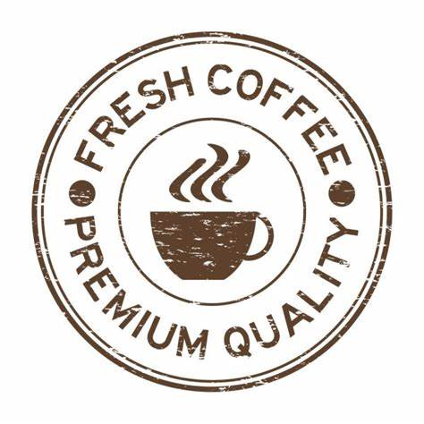

Sobre a loja
A Fazenda Auto da Biquinha é localizada em Caratinga, Suldeste de Minas Gerais , região conhecida como Biquinha do "Corrego São Manuel Rio Preto". A Fazenda tem características físico-química de solo, relevo e microclimas ideais para produzir 10 mil sacas de café de alta qualidade por ano.
Compre direto do produtor. Aqui você vai encontrar grãos frescos e limpos; podendo comprar a saca de café direto da fazenda!

- 